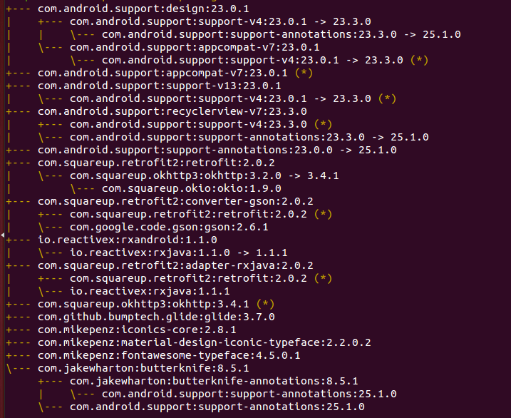

Gradle是一种构建工具，它抛弃了基于XML的构建脚本，取而代之的是采用一种基于Groovy的内部领域特定语言（DSL），建议可以先熟悉一下Groovy脚本。 官方文档：Gradle 使用指南 官方文档：Gradle API Android 配置构建 Android 插件 DSL 扩展 本文只是简单的介绍一下 Gradle 的一些基本配置，如果想进行一些高级的操作或者是想深入的了解这些配置，请参考我的后面几篇博客。 Gradle 使用指南 -- Android DSL 扩展 Gradle 使用指南 -- Plugin DSL 扩展
Gradle命令
常用命令
gradle明明一般是./gradlew +参数， gradlew代表 gradle wrapper，意思是gradle的一层包装，大家可以理解为在这个项目本地就封装了gradle，即gradle wrapper， 在gradle/wrapper/gralde-wrapper.properties文件中声明了它指向的目录和版本。只要下载成功即可用grdlew wrapper的命令代替全局的gradle命令。
./gradlew -v版本号./gradlew clean清除app目录下的build文件夹./gradlew build检查依赖并编译打包./gradlew tasks列出所有task
这里注意的是 ./gradlew build 命令把debug、release环境的包都打出来，如果正式发布只需要打Release的包，该怎么办呢，下面介绍一个很有用的命令 assemble， 如：
./gradlew assembleDebug编译并打Debug包./gradlew assembleRelease编译并打Release的包
除此之外，assemble还可以和productFlavors结合使用：
./gradlew installReleaseRelease模式打包并安装./gradlew uninstallRelease卸载Release模式包
加入自定义参数
比如我们想根据不同的参数来进行不用的编译配置，可以在./gradlew中加入自定义参数。
./gradlew assembleDebug -Pcustom=true
就可以在build.gradle中使用下面代码来判断：
if (project.hasProperty('custom')){
}
assemble结合Build Variants来创建task
assemble 还能和 Product Flavor 结合创建新的任务，其实 assemble 是和 Build Variants 一起结合使用的，而 Build Variants = Build Type + Product Flavor，举个例子大家就明白了：
如果我们想打包 wandoujia 渠道的release版本，执行如下命令就好了：
./gradlew assembleWandoujiaRelease
如果我们只打wandoujia渠道版本，则：
./gradlew assembleWandoujia
此命令会生成wandoujia渠道的Release和Debug版本 同理我想打全部Release版本：
./gradlew assembleRelease
这条命令会把Product Flavor下的所有渠道的Release版本都打出来。
总之，assemble 命令创建task有如下用法：
assemble<Variant Name>： 允许直接构建一个Variant版本，例如assembleFlavor1Debug。assemble<Build Type Name>： 允许构建指定Build Type的所有APK，例如assembleDebug将会构建Flavor1Debug和Flavor2Debug两个Variant版本。assemble<Product Flavor Name>： 允许构建指定flavor的所有APK，例如assembleFlavor1将会构建Flavor1Debug和Flavor1Release两个Variant版本。
Gradle配置
Gradle构建脚本 build.gradle Gradle属性文件 gradle.properties Gradle设置文件 settings.gradle
build.gradle
先看整个项目的gradle配置文件：
buildscript {
repositories {
jcenter()
}
dependencies {
classpath 'com.android.tools.build:gradle:1.3.0'
// NOTE: Do not place your application dependencies here; they belong
// in the individual module build.gradle files
}
}
allprojects {
repositories {
jcenter()
}
}
内容主要包含了两个方面：一个是声明仓库的源，这里可以看到是指明的jcenter(), 之前版本则是mavenCentral(), jcenter可以理解成是一个新的中央远程仓库，兼容maven中心仓库，而且性能更优。
另一个是声明了android gradle plugin的版本，android studio 1.0正式版必须要求支持gradle plugin 1.0的版本。
上面的 buildscript 和 allprojects 其实是 Project 类的一个 Script blocks，Gradle 中每个 build.gradle 会转换成一个 Project 对象。
某个Moudle的gradle配置文件：
buildscript
buildscript {
repositories {
maven { url 'http://*********' }
}
dependencies {
classpath 'com.android.tools.build:gradle:1.3.1'
}
}
buildscript{}设置脚本的运行环境。repositories{}支持java依赖库管理，用于项目依赖。dependencies{}依赖包的定义。支持maven/ivy，远程，本地库，也支持单文件。如果前面定义了repositories{}maven 库，则使用maven的依赖库，使用时只需要按照用类似于com.android.tools.build:gradle:0.4，gradle 就会自动的往远程库下载相应的依赖。
apply
//声明引用 com.android.application 插件，那么这个模块就是一个Android应用程序
apply plugin: 'com.android.application'
apply plugin:声明引用插件的类型。如果是库的话就加
apply plugin: 'com.android.library'
apply from：表示引用其他的配置文件，比如
apply from: "config.gradle"
apply from: '../version.gradle', to: rootProject // 导入到 root project
apply from: '../buildscript.gradle', to:buildscript // 导入到 buildscript 块
android
这个是 Android 插件引入的 Script blocks，想深入了解的话看我后面的博客。
android {
// 编译SDK的版本
compileSdkVersion 22
// build tools的版本
buildToolsVersion "23.0.1"
//aapt配置
aaptOptions {
//不用压缩的文件
noCompress 'pak', 'dat', 'bin', 'notice'
//打包时候要忽略的文件
ignoreAssetsPattern "!.svn:!.git"
//分包
multiDexEnabled true
//--extra-packages是为资源文件设置别名：意思是通过该应用包名+R，com.android.test1.R和com.android.test2.R都可以访问到资源
additionalParameters '--extra-packages', 'com.android.test1','--extra-packages','com.android.test2'
}
//默认配置
defaultConfig {
//应用的包名
applicationId "com.example.heqiang.androiddemo"
minSdkVersion 21
targetSdkVersion 22
versionCode 1
versionName "1.0"
// 只打包后面配置的几种资源
resConfigs "zh-rCN","zh-rHK","zh-rTW"
// ndk 配置，打包相应平台的so
ndk { abiFilters 'armeabi-v7a', 'arm64-v8a' }
// 开启分包
multiDexEnabled true
//将我们需要的类打包进主包
multiDexKeepFile file('multidex-config.txt')
packagingOptions {
exclude 'META-INF/rxjava.properties'
// 取消so压缩，https://www.jianshu.com/p/9a68989728f1
doNotStrip "*/armeabi/*.so"
}
//会追加在上面 applicationId 字符串的后面，形成最终的包名。
//比如，如果applicationId为a.b.c，那么包名为a.b.c.test
applicationIdSuffix "test"
//当前的配置所属的 “风味维度”，在打多渠道包的时候详细介绍
dimension 'debug'
//仅适用于aar项目，
//和 proguardFiles 的区别在于，consumerProguardFiles 会被主App模块作为混淆文件使用导入，
//而 proguardFiles 则不会。
consumerProguardFiles 'consumer-rules.pro'
//配置编译时 java 的一些参数，例如我们使用 annotationProcessor 时所需要的参数。
javaCompileOptions {
annotationProcessorOptions{
arguments = []
classNames ''
}
}
//配置可以在 AndroidManifest.xml 中替换的参数，一般用于多渠道中使用，不会在 defaultConfig 中使用。
//这样配置完后就可以在AndroidManifest.xml中使用：android:icon="${APP_LOGO_ICON}"
//manifestPlaceholders = [APP_LOGO_ICON: "@mipmap/ic_logo"]
// 添加至 res/value，通过 R.string.age 获取
resValue('string', 'age', '12year')
}
//编译配置
compileOptions {
// java版本
sourceCompatibility JavaVersion.VERSION_1_7
targetCompatibility JavaVersion.VERSION_1_7
}
//源文件目录设置
sourceSets {
main {
//jni lib的位置
jniLibs.srcDirs = jniLibs.srcDirs << 'src/jniLibs'
//定义多个资源文件夹,这种情况下，两个资源文件夹具有相同优先级，即如果一个资源在两个文件夹都声明了，合并会报错。
res.srcDirs = ['src/main/res', 'src/main/res2']
//指定多个源文件目录
java.srcDirs = ['src/main/java', 'src/main/aidl']
}
}
// native 代码配置
externalNativeBuild {
// ndk-build 配置
ndkBuild{
path "src/main/jni/Android.mk"
}
cmake {
}
}
//签名配置
signingConfigs {
debug {
keyAlias 'androiddebugkey'
keyPassword 'android'
storeFile file('keystore/debug.keystore')
storePassword 'android'
}
}
buildTypes {
//release版本配置
release {
debuggable false
// 是否进行混淆
minifyEnabled true
//去除没有用到的资源文件，要求minifyEnabled为true才生效
shrinkResources true
// 混淆文件的位置
proguardFiles getDefaultProguardFile('proguard-android.txt'), 'proguard-rules.txt'
signingConfig signingConfigs.debug
//ndk的一些相关配置，也可以放到defaultConfig里面。
//指定要ndk需要兼容的架构(这样其他依赖包里mips,x86,arm-v8之类的so会被过滤掉)
ndk {
abiFilter "armeabi"
}
}
//debug版本配置
debug {
debuggable true
// 是否进行混淆
minifyEnabled false
......
//在 BuildConfig 类中添加值，具体介绍参考我的博客：Android BuildConfig的使用
buildConfigField("boolean", "IS_DEBUG", "true")
}
}
// lint配置
lintOptions {
//移除lint检查的error
abortOnError false
//禁止掉某些lint检查
disable 'NewApi'
}
// 生成多 apk 配置
splits {
//基于density生成多apk
density {
enable true
exclude "ldpi", "tvdpi", "xxxhdpi", "xhdpi"
compatibleScreens 'small', 'normal', 'large', 'xlarge'
}
// 基于abi生成多apk
abi {
enable true
reset()
include "armeabi-v7a"
universalApk false
}
}
// 修改生成的apk的名字，也可以放在 buildTypes 里面，这样就只针对当前编译类型生效
applicationVariants.all { variant ->
variant.outputs.all {
//def apkName = "Demo_${defaultConfig.versionName}_${buildType.name}"
//outputFileName = apkName + ".apk"
outputFileName = outputFileName.replace("app","Demo_"+defaultConfig.versionName)
}
}
}
android{}设置编译android项目的参数，构建android项目的所有配置都写在这里。
除了上面写的，在android{}块中可以包含以下直接配置项：
productFlavors{ }产品风格配置，ProductFlavor类型，后面的多渠道打包章节会详细介绍testOptions{ }测试配置，TestOptions类型dexOptions{ }dex配置，DexOptions类型packagingOptions{ }PackagingOptions类型jacoco{ }JacocoExtension类型。 用于设定 jacoco版本splits{ }Splits类型。
几点说明：
- 文件开头
apply plugin是最新gradle版本的写法，以前的写法是apply plugin: 'android', 如果还是以前的写法，请改正过来。 minifyEnabled也是最新的语法，很早之前是runProguard,这个也需要更新下。proguardFiles这部分有两段，前一部分代表系统默认的android程序的混淆文件，该文件已经包含了基本的混淆声明，免去了我们很多事，这个文件的目录在 sdk目录/tools/proguard/proguard-android.txt, 后一部分是我们项目里的自定义的混淆文件，目录就在app/proguard-rules.txt, 如果你用Studio 1.0创建的新项目默认生成的文件名是proguard-rules.pro, 这个名字没关系，在这个文件里你可以声明一些第三方依赖的一些混淆规则。最终混淆的结果是这两部分文件共同作用的。aaptOptions更多介绍 http://blog.csdn.net/heqiangflytosky/article/details/51009123externalNativeBuild{}关于native代码的配置请参考我的博客Android JNI -- Android Studio JNI 开发基础
变量的引用
比如在gradle的某个地方想使用版本号，可以使用下面的方法：
def getVersionCode() {
int code = android.defaultConfig.versionCode
return code
}
repositories
repositories {
flatDir {
//本地jar依赖包路径
dirs '../../../../main/libs'
}
}
dependencies
dependencies {
// 单个引入依赖
compile files('libs/android-support-v4.jar')
//在flatDir.dirs下面找依赖的aar
compile (name:'ui', ext:'aar')
// 编译extras目录下的ShimmerAndroid模块
// 使用transitive属性设置为false来排除所有的传递依赖，默认为true
compile project(':extras:ShimmerAndroid'){
transitive = false
}
// 编译CommonSDK模块，但是去掉此模块中对com.android.support的依赖，防止重复依赖报错
compile (project(':CommonSDK')) { exclude group: "com.android.support" }
provided fileTree(dir: 'src/android5/libs', include: ['*.jar'])
provided 'com.android.support:support-v4:21.0.3'
provided project(':main-host')
//通用使用exclude排除support-compat模块的依赖
compile ('com.jakewharton:butterknife:8.5.1'){
exclude module: 'support-compat'
}
// gradle 3.0以后版本支持的写法
implementation 'com.android.support.constraint:constraint-layout:1.0.2'
api 'com.android.support:design:26.1.0'
// 指定使用aar格式的依赖包，但是这样会关闭依赖传递
implementation 'com.android.support:appcompat-v7:22.1.1@aar
}
compile和providedcompile表示编译时提供并打包进apk。provided表示只在编译时提供，不打包进apk。implementation和api这两个是 Gradle 3.0 以后的依赖方法，implementation在编译期会将依赖隐藏在内部而不对外公开，就是说使用implementation的依赖不会传递。只有在运行时其他模块才能获取依赖。比如：一个项目中app模块依赖A模块，A模块使用implementation来依赖 fastjson ，那么app里面如果不添加依赖的话就不能直接引用fastjson，会编译不通过。这样做的好处是1.加快编译速度，2. 隐藏对外不必要的接口。api和以前的compile是一样的。 gradle 3.0以后使用compileOnly来代替provided，使用runtimeOnly来代替apkexclude防止重复依赖，后面会重点介绍transitive排除所有的传递依赖，后面会重点介绍include
CommonSDK模块的定义可以参考settings.gradle
其他的介绍可以参考 依赖库管理。
本地依赖
本地依赖指的是我们把jar包或者aar包放到本地依赖的方法，这样就不用发布到远程仓库。 默认情况下，新建的Android工程有一个libs目录，并且被添加为依赖目录。 文件过多时，你可以添加文件夹，这样就把所有的依赖包加入：
dependencies {
compile fileTree('libs')
}
还可以添加过滤器，只添加 Jar 依赖包：
dependencies {
compile fileTree(dir: 'libs', include: ['*.jar'])
}
还可以单个添加依赖：
dependencies {
compile files('libs/xxx.jar') // aar 也可以
}
或者：
dependencies {
compile(name:'libraryname', ext:'aar')
}
但是这样会关闭依赖传递。
如果在子模块中放入libs下的依赖包可以无法依赖，上面的添加单个依赖的方法可以解决这个问题。 我们还可以指定目录地址作为放置依赖包的目录：
repositories {
flatDir {
dirs 'jars'
}
}
当然，还可以指定多个：
repositories {
flatDir {
dirs 'jars';dirs 'aars'
}
}
本地仓库
除了上面的本地直接添加依赖包的方法，我们还可以设置本地仓库：
repositories {
maven {
url "../repo"
}
}
几点说明
- 看到上面的两个一模一样的
repositories和dependencies了吗？他们的作用是不一样的，在buildscript里面的那个是插件初始化环境用的，用于设定插件的下载仓库，而外面的这个是设定工程依赖的一些模块和远程library的下载仓库的。 @aar的使用：aar（Android Archive）和jar（Java Archive File）之间的区别：aar 可以包含源代码和资源（包含 AndroidManifest.xml 布局文件等资源文件），但是 jar 只能包含源代码。当您在项目的build.gradle 中包含一个带有后缀@arr的库时，该库将下载 aar 后缀的库文件。如果没有，默认情况下将下载 jar 文件。当然，您也可以添加后缀@jar使下载 jar 库文件。比如：implementation 'com.android.support:appcompat-v7:22.1.1@aar'
settings.gradle
这个文件是全局的项目配置文件，里面主要声明一些需要加入gradle的module。
一般在setting.gradle中主要是调用include方法，导入工程下的各个子模块。
那我们在setting.gradle里面还能写什么呢？因为setting.gradle对应的是gradle中的Settings对象，那查下Settings的文档（https://docs.gradle.org/current/dsl/org.gradle.api.initialization.Settings.html），看下它都有哪些方法，哪些属性，就知道在`setting.gradle`能写什么了；
include ':AndroidDemo'
include ':CommonSDK'
project(':CommonSDK').projectDir = new File(settingsDir, '../../CommonSDK/')
include调用后，生成了一个名为:CommonSDK的Project对象，project(':CommonSDK')取出这个对象，设置Project的 projectDir属性。projectDir哪里来的？请看Project类的文档。
gradle.properties
可以在 gradle.properties 文件中配置一些变量，这些变量在这个工程下的所有module的build.gradle文件里都可以使用。这样就可以把一些共用的变量放到这里，这样后面修改的时候就可以只修改这个变量，不用各个模块都要修改了。 比如我们在 gradle.properties SDK 版本以及应用的版本号：
MIN_SDK_VERSION=21
TARGET_SDK_VERSION=22
VERSION_CODE=200100
VERSION_NAME=2.1.0
debug=true
RX_ANDROID_VERSION=1.2.0
那么在 build.gradle 中可以通过project进行获取或者 "${RX_ANDROID_VERSION}" 引用：
defaultConfig {
applicationId "com.example.heqiang.testsomething"
minSdkVersion project.MIN_SDK_VERSION as int
targetSdkVersion project.TARGET_SDK_VERSION as int
versionCode project.VERSION_CODE as int
versionName project.VERSION_NAME
// 还可以这样获取
if('true' == project.properties['debug']){
}
/*
* as int 关键字是用来进行类型转换的，因为从配置里面读取出来的默认是字符串
*还可以使用 versionCode Integer.parseInt(project.VERSION_CODE)
* */
}
// 还可以这样用
dependencies {
compile "io.reactivex:rxandroid:${RX_ANDROID_VERSION}"
compile "io.reactivex:rxjava:${RX_JAVA_VERSION}"
}
或者在 gradle.properties 中添加：
systemProp.versionName=1.0.0
systemProp.versionCode=100
可以通过 System.properties进行引用：
def code = System.properties['versionCode']
def name = System.properties['versionName']
调试
我们在进行一些配置的时候可能需要知道一些变量的值，这时候可以在 build.gradle 中添加打印进行调试，比如：
defaultConfig {
applicationId "com.example.hq.testsomething"
minSdkVersion project.MIN_SDK_VERSION as int
targetSdkVersion project.TARGET_SDK_VERSION as int
versionCode project.VERSION_CODE as int
versionName project.VERSION_NAME
println('** build versionName=' + versionName)
}
在 Gradle Console 中就可以看到打印：
** build versionName=2.1.0
如果找不到 Gradle Console ，可以 View ->Tool Windows -> Gradle, 任意选择一个Task，双击执行即可。 或者使用命令行编译。
依赖库管理
本地依赖
dependencies {
//单文件依赖
compile files('libs/android-support-v4.jar')
//某个文件夹下面全部依赖
compile fileTree(dir: 'src/android6/libs', include: ['*.jar'])
compile (name:'ui', ext:'aar')
compile (project(':CommonSDK')) { exclude group: "com.android.support" }
provided fileTree(dir: 'src/android5/libs', include: ['*.jar'])
provided 'com.android.support:support-v4:21.0.3'
provided project(':main-host')
}
远程依赖
gradle同时支持maven，ivy，以maven作为例子：
repositories {
//从中央库里面获取依赖
mavenCentral()
//或者使用指定的本地maven 库
maven{
url "file://F:/githubrepo/releases"
}
//或者使用指定的远程maven库
maven{
url "https://github.com/youxiachai/youxiachai-mvn-repo/raw/master/releases"
}
}
dependencies {
//应用格式: packageName:artifactId:version
compile 'com.google.android:support-v4:r13'
}
项目依赖
对于项目依赖android library的话，在这里需要使用gradle mulit project机制。
Mulit project设置是gradle约定的一种格式，如果需要编译某个项目之前，要先编译另外一个项目的时候，就需要用到。结构如下（来自于官方文档）：
MyProject/
| settings.gradle
+ app/
| build.gradle
+ libraries/
+ lib1/
| build.gradle
+ lib2/
| build.gradle
需要在workplace目录下面创建settings.gradle 的文件，然后在里面写上：
include ':app', ':libraries:lib1', ':libraries:lib2'
例如：
include ':AndroidDemo'
include ':CommonSDK'
project(':CommonSDK').projectDir = new File(settingsDir, '../../CommonSDK/')
如此，gradle mutil project 就设置完毕。
对于app project如果需要应用libraries目录下的lib1，只需要在app project的build.gradle文件里的依赖中这么写：
compile project(':libraries:lib1')
类似前面的
provided project(':main-host')
即可完成，写完以后可以用gradle dependencies可以检查依赖状况
Gradle依赖的统一管理
我们可以在项目的根目录创建一个gradle配置文件config.gradle，内容如下：
ext{
android=[
compileSdkVersion: 22,
buildToolsVersion: "23.0.1",
minSdkVersion: 21,
targetSdkVersion: 22,
versionCode: 1,
versionName: "1.0"
]
dependencies=[
compile:'com.android.support:support-v4:21.0.3',
compile: (project(':CommonSDK')) { exclude group: "com.android.support" },
provided: fileTree(dir: 'src/android5/libs', include: ['*.jar']),
provided: project(':main-host')
]
}
targetSdkVersion的版本还有依赖库的版本升级都在这里进行统一管理，所有的module以及主项目都从这里同意读取就可以了。 在build.gradle文件中加入：
apply from:"config.gradle"
意思是所有的子项目或者所有的modules都可以从这个配置文件中读取内容。 android节点读取ext中android对应项，dependencies读取dependencies对应项，如果配置有变化就可以只在config.gradle中修改，是不是很方便进行配置的管理呢？
检查依赖报告
运行命令./gradlew <projectname>:dependencies （projectname为settings.gradle里面配置的各个project，如果没有配置，直接运行./gradlew dependencies），会把该模块所有配置的依赖树会打印出来，依赖树显示了你 build 脚本声明的顶级依赖和它们的传递依赖。
为了减少输出内容我们只对 compile configuration感兴趣，那么可以运行下面的命令：
./gradlew <projectname>:dependencies --configuration compile

仔细观察你会发现有些传递依赖标注了（*）星号，表示这个依赖被忽略了，这是因为其他顶级依赖中也依赖了这个传递的依赖，Gradle会自动分析下载最合适的依赖，一般是比较新的版本。
（->）箭头表示被强转变依赖于箭头后面的版本
如果在 Gradle 3.0 以后可以运行：
./gradlew <projectname>:dependencies --configuration releaseRuntimeClasspath
排除传递依赖
Gradle允许你完全控制传递依赖，你可以选择排除全部的传递依赖也可以排除指定的依赖。
- exclude：前面已经介绍过，可以设置不编译指定的模块，排除指定模块的依赖。后的参数有
group和module，可以分别单独使用，会排除所有匹配项。// 编译CommonSDK模块，但是去掉此模块中对com.android.support的依赖，防止重复依赖报错 compile (project(':CommonSDK')) { exclude group: "com.android.support" } compile ('com.jakewharton:butterknife:8.5.1'){ exclude module: 'support-compat' exclude group: 'com.android.**.***', module: '***-***' } - transitive：前面已经介绍过，用于自动处理子依赖项，默认为true，gradle自动添加子依赖项。设置为false排除所有的传递依赖，可以用来解决一些依赖冲突的问题，比如一些
Error:java.io.IOException: Duplicate zip entry报错。// 使用transitive属性设置为false来排除所有的传递依赖 compile project(':extras:ShimmerAndroid'){ transitive = false }- force：强制设置某个模块的版本。
configurations.all{ resolutionStrategy{ force'org.hamcrest:hamcrest-core:1.3' } }
- force：强制设置某个模块的版本。
或者：
compile ('com.jakewharton:butterknife:8.5.1'){
// 冲突时优先使用该版本
force = true
}
这样，应用中对org.hamcrest:hamcrest-core 依赖就会变成1.3版本。
动态版本声明
如果你想使用一个依赖的最新版本，你可以使用latest.integration，比如声明 Cargo Ant tasks的最新版本，你可以这样写org.codehaus .cargo:cargo-ant:latest-integration，你也可以用一个+号来动态的声明：
dependencies {
//依赖最新的1.x版本
compile "org.codehaus.cargo:cargo-ant:1.+"
}
然后在依赖树里面可以清晰的看到选择了哪个版本：
\--- org.codehaus.cargo:cargo-ant:1.+ -> 1.3.1
http://www.open-open.com/lib/view/open1431391503529.html http://www.jianshu.com/p/429733dbbc34
多渠道打包
主要借助
android {
flavorDimensions "",""
productFlavors{
……
}
}
来实现。
比如，添加下面的配置后：
android {
flavorDimensions "app","module"
productFlavors {
A{
dimension "app"
}
B{
dimension "app"
}
C{
dimension "module"
}
D{
dimension "module"
}
}
编译任务就多出了assembleA，assembleB，assembleC，assembleD，assembleAC，assembleAD，assembleBC，assembleBD，这样就可以打包成不同的apk。 flavorDimensions是Android Studio3.0添加的，如果想要多渠道打包，所有的风味必须属于一个已命名的风味维度，不同风味维度的风味可以结合使用，就像上面一样。 我们能用它们来实现什么功能呢？ 1.实现不同的配置：
flavorDimensions "app","module"
productFlavors {
A{
dimension "app"
applicationIdSuffix "a"
buildConfigField "String" , "channel" , "A"
manifestPlaceholders = [APP_LOGO_ICON: "@mipmap/ic_logo_a"]
}
B{
dimension "app"
applicationIdSuffix "b"
buildConfigField "String" , "channel" , "B"
manifestPlaceholders = [APP_LOGO_ICON: "@mipmap/ic_logo_a"]
}
C{
dimension "module"
applicationIdSuffix "c"
}
D{
dimension "module"
}
}
sourceSets {
A{
res.srcDirs = ['A/res']
java.srcDirs = ['A/src']
manifest.srcFile "A/AndroidManifest.xml"
}
B{
res.srcDirs = ['B/res']
java.srcDirs = ['B/src']
manifest.srcFile "B/AndroidManifest.xml"
}
}
配置不同的包名，Config值，引用不同的资源和代码等等。
assembleA的包名就是applicationId+".a"，assembleAC的包名就是applicationId+".a.c"。
这里使用manifestPlaceholders为不同的渠道apk设置不同的图标，可以在AndroidManifest.xml中使用android:icon="${APP_LOGO_ICON}。
使用manifestPlaceholders的这种配置，同样适用于manifest的其他配置。比如你需要在不同维度的apk里面，指定不同的启动Activity，可以对你的<activity android:name的值使用 {activity_name}的方式，然后在productFlavors里面配置这个{activity_name}的值。